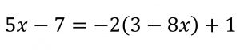
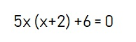
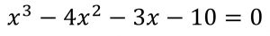
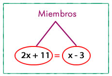
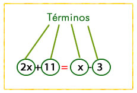
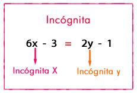
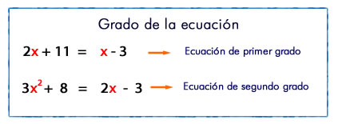
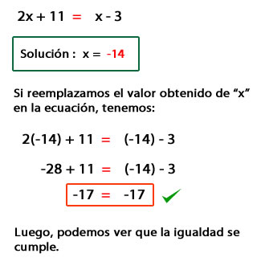
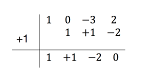

ECUACIONES.
En matemática se llama ecuación a la igualdad entre dos expresiones algebraicas, que serán denominados miembros de la ecuación.
En las ecuaciones, aparecerán relacionados a través de operaciones matemáticas, números y letras (incógnitas).
Toda ecuación se transforma en otra equivalente cuando se ejecutan operaciones elementales iguales en ambos miembros.
Estas Propiedades de Igualdad son las que se aplican en la resolución de las ecuaciones, independientemente del tipo de coeficientes numéricos que tenga, en otras palabras, siempre se resuelven las ecuaciones usando los mismos métodos, lo único diferente es la forma en que se realizan las operaciones matemáticas con los números que pertenecen a distintos conjuntos .
Las funciones algebraicas o funciones polinómicas son las ecuaciones que introducen polinomios dentro de sus expresiones. Podemos encontrar diferentes tipos de funciones polinómicas según el grado de la ecuación. El grado de la ecuación se determina por el mayor exponente.
Las ecuaciones de primer grado o ecuaciones lineales, se definen como las expresiones con una o más incógnitas elevadas a la primera potencia. Se denominan lineales porque representan una línea en el eje cartesiano. Aprende a encontrar la solución de estas ecuaciones con los ejercicios de ecuaciones de primer grado.
La ecuaciones de segundo grado, también llamadas ecuaciones cuadráticas, son aquellas cuyo mayor grado es 2. Gráficamente se las representa con una parábola ya que interseccionan en dos puntos del eje x. Puedes aprender a resolver ecuaciones de este tipo con los ejercicios de ecuaciones de segundo grado.
Se denominan de tercer grado todas las ecuaciones cuyo grado es 3. Estas ecuaciones representan una gráfica con dos puntos de inflexión, y son muy utilizadas para trazadores de funciones.
Sucesivamente, según el grado que posean las ecuaciones se consideran 'ecuaciones de grado n' donde n es el mayor exponente de la ecuación. De forma que si en una ecuación n=7, se denomina ecuación de grado 7.
Miembros: Son las expresiones que aparecen a cada lado del signo igual ( =).
Términos: Son los monomios de cada miembro.
Incógnitas: Son las letras que aparecen en la ecuación.
Grado de la ecuación: Es el mayor exponente con que figura la incógnita (una vez realizadas todas las operaciones).
Soluciones: Son los valores que deben tener las incógnitas para que la igualdad entre los miembros sea cierta.
Vamos a exponer los 3 métodos básicos para resolver sistemas de ecuaciones lineales: sustitución, reducción e igualación. Para facilitar la comprensión de los métodos, sólo vamos a resolver sistemas de 2 ecuaciones con 2 incógnitas.
Las ecuaciones cuadráticas son polinomios de segundo grado igualados a cero (obviamente el coeficiente principal debe ser distinto de cero):
a X2 + b X + c = 0
Fórmula de Bhaskaradada por la expresión:

Donde X1 y X2 son las soluciones a la ecuación cuadrática y se obtuvieron de
despejar X
de la ecuación.
Para resolver este tipo de ecuaciones vamos a utilizar la regla de Ruffini. De esta manera podremos factorizar el polinomio y bien, descomponerlo y poder calcular las soluciones de manera directa o bien, encontrar la ecuación de segundo grado resultante y obtener así parte de sus soluciones.
De este modo, ya podemos ver como X puede ser una de las posibles soluciones.
Nos quedamos con la ecuación de segundo grado resultante obtenida al factorizar la primera por la regla de Ruffini igualamos a 0 la parte no factorizada. y resolvemos la ecuación.